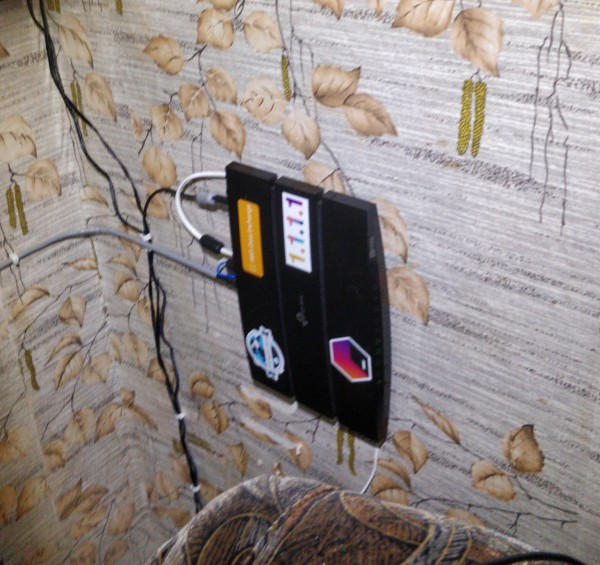
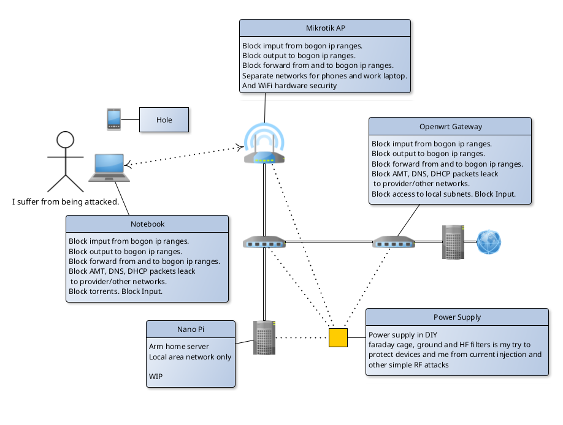

OpenWRT firmware
Arm local network server for backups but at now not is use, Ground, zero to ground, shields and etc...

Original firmware, attacked by RF and has always blinking red led :)

Network diagram:
Laptop Firewall and same ports are closed by firewalls on other network devices.
And all transformers, power supply sources, in something close to a faraday cage.
Reason and conclusion